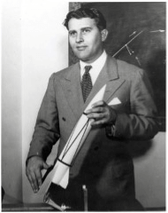

Выдающийся немецкий и американский ученый (1912-1977), конструктор
ракетно-космической техники, основоположник современного ракетостроения и один из создателей ФАУ-2
(V-2).
Член НСДАП с 1937 года, штурмбаннфюрер СС (1943-1945).
В июле 1943 года Гитлер лично присвоил ему звание профессора после просмотра презентации ФАУ-2.
Находился
на 1-м месте в «Списке Ставера» - перечне немецких ученых и инженеров, которые подлежали немедленному
задержанию, допросу и последующей эвакуации.
В США работал над программой баллистических ракет средней дальности (то есть от 3000 до 5500 км),
считается также отцом американской космической программы. Эпиграф взят из статьи фон Брауна «Why I
Believe
in Immortality», опубликованной в книге Уильяма Николса «The Third Book of Words to Live By» (1962).
-
Раздел 1
Как перестать беспокоиться и начать читать роман
-
Раздел 2
примечания
-
Раздел 3
Комментарии
-
Раздел 4
KEZVH
-
Раздел 5
Хронология
-
Раздел 6
Персонажи
-
Раздел 7
Как перестать беспокоиться и начать читать роман - 2
Примечания
Постраничные примечания к роману, объясняющие значения малоупотребимых слов и выражений, содержащие справки об исторических личностях и событиях, о произведениях искусства, математических формулах и т.п.
Рекомендуется к прочтению параллельно с чтением романа. Здесь нет никаких спойлеров. Примечания мы делали, дабы вы меньше блуждали по просторам интернета в поисках нужной информации.
-
Вернер фон Браун/Wernher von Braun
Стр.3 / Стр.7
 -
Железная королева/Iron queen
Стр.3 / Стр.9
Есть несколько версий того, что имеется в виду:
- большая металлическая кровать, сделанная по заказу королевы Виктории (отсюда название) и имевшая то преимущество перед деревянными, что в ней не водились клопы;
- статуя королевы Виктории;
- лондонский вокзал Виктория;
- так в “Одиссее” называют Персефону.